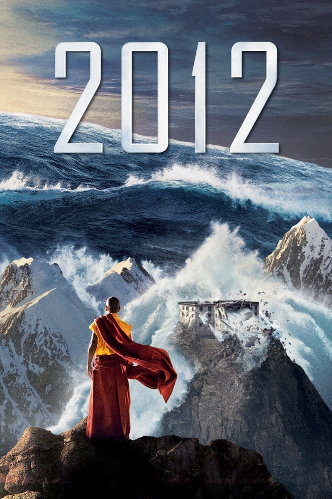

Мировая премьера: 13 ноября 2009
Слоган: Нас предупреждали об этом.
Сюжет: В 2009 году международная команда учёных сообщает государственным чиновникам о неизбежности конца света. Мир, каким мы его знаем, перестанет существовать совсем скоро – в 2012 году. Это было предсказано в древнем календаре индейцев майя, но никто не ожидал, что пророчество окажется истинным. Правительства Земли разрабатывают план спасения как можно большего числа людей. Но это количество несравненно меньше даже трети населения планеты! Информация о конце света скрывается до последнего, чтобы Землю не охватила жестокая паника. Писатель и любящий отец двоих детей Джексон Кёртис случайно узнаёт всю правду от скандального журналиста Чарли Фроста. Джексон пытается спасти свою семью в момент, когда цивилизация вот-вот перестанет существовать. Планету охватывают все немыслимые стихийные бедствия одновременно в своём самом монструозном проявлении.
Режиссёр: Роланд Эммерих
В ролях: |
Джон Кьюсак | Джексон Кёртис |
| Чьюител Эджиофор | Доктор Эдриен Хелмсли | |
| Аманда Пит | Кейт Кёртис | |
| Оливер Платт | Карл Анхойзер | |
| Том МакКарти | Доктор Гордон Зильберман | |
| Златко Бурич | Юрий Карпов | |
| Вуди Харрельсон | Чарли Фрост | |
| Дэнни Гловер | Президент Томас Уилсон | |
| Морган Лили | Лилли Кёртис | |
| Лиам Джеймс | Ной Кёртис | |
| Тэнди Ньютон | Доктор Лора Уилсон | |
| Беатрис Розен | Тамара Джикан | |
| Йохан Урб | Саша | |
| Джордж Сигал | Тони Дельгатто | |
| Блу Манкума | Гарри Хелмсли | |
| Джон Биллингсли | Профессор Фредерик Уэст | |
| Осрик Чау | Нима | |
| Джими Мистри | Доктор Сатнам Цурутани | |
| Стивен МакХэтти | Капитан Майклз | |
| Чин Хань | Теньзинь | |
| Райан МакДональд | Скотти | |
| Филипп Хауссманн | Олег Карпов | |
| Александр Хауссманн | Алек Карпов | |
| Лиза Лу | Бабушка Сонам | |
| Патрик Бошо | Ролан Пикар | |
| Генри О | Лама Ринпош | |
| Чанг Тсенг | Дедушка Сонам |
Бюджет: $ 200 млн.
Кассовые сборы в США: $ 166 млн.
Кассовые сборы в мире: $ 791 млн.
Продолжительность: 2 ч. 29 мин.
Рейтинг: 5.8